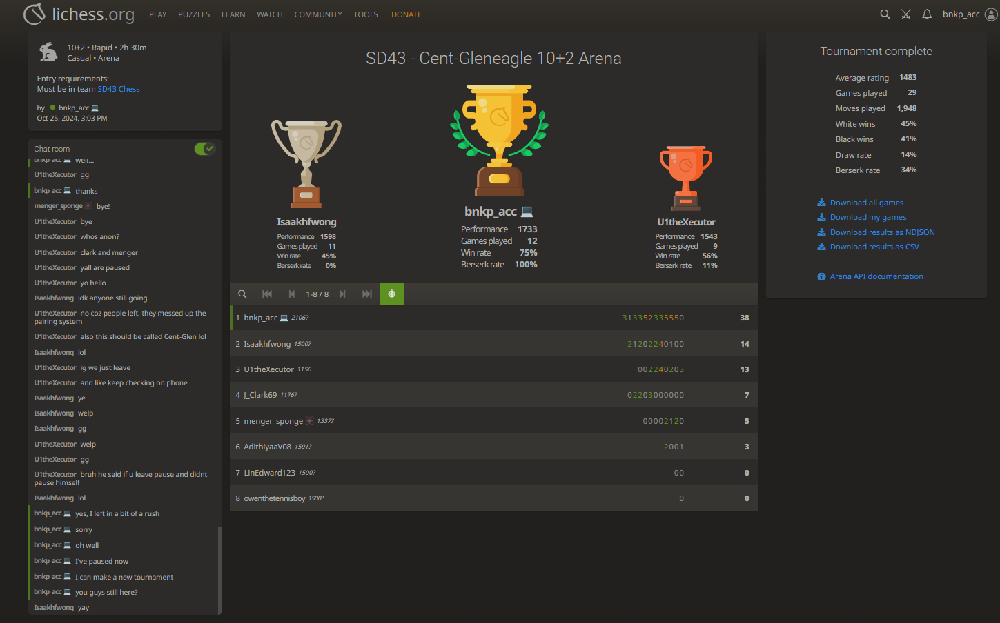
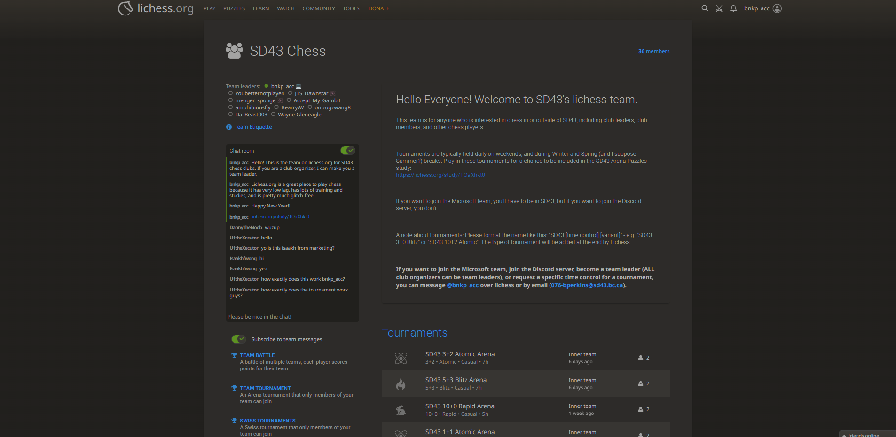

Tournaments
|
OTB tournaments tend to be more formal. They may involve prizes/awards and will typically be through SD43 Junior Chess Association or BC Junior Chess Association. Online tournaments are typically more informal and will be hosted without much prior notice. They can also be started very quickly so you can request one whenever you want. Some tournaments will be for chess variants, which are essentially chess but with rule changes. |
 |
|  |
Check out the SD43 Junior Chess Association and the BC Junior Chess Association for more details about OTB tournaments! |